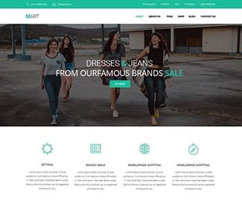

PSD maket онлайн сервиса:
Что было сделано: Верстка страницы сайта (html, css): Отзывчивая графика, использывано методологию БЭМ и препроцессоров SASS: Использывано Gulp-сборки для автоматизации процесса разработки:
перейти на сайтЧто было сделано: Верстка страницы сайта (html, css): Отзывчивая графика, использывано методологию БЭМ и препроцессоров SASS: Использывано Gulp-сборки для автоматизации процесса разработки:
перейти на сайт